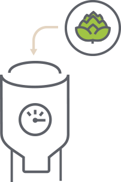

Estudio técnico
Proceso de fabricación de la cerveza
El proceso de fabricación se puede definir en seis grandes fases:
-
Malteado: Los granos de cereal, normalmente de trigo o cebada, se sumergen en agua para que comiencen a germinar y secarse con aire caliente poco después. Dependiendo del grado de tostado conseguiremos maltas más claras u oscuras, que aportarán el color de la cerveza. Las etapas del malteado son:
- Selección del grano: se seleccionan granos con textura homogéneas, malteados o no malteados.
- Remojado del grano: se pone a remojar el grano en diferentes ciclos con el fin de reblandecer e hinchar el grano gracias a la absorción del agua.
- Germinado: En el momento precisamente anterior de la aparición de un diminuto brote verde (plúmula y radícula), la planta emite una enzima que convierte el almidón en azúcar indicando que se debe interrumpir el germinado. Esta etapa dura unos días.
- Secado del grano: se realiza con el fin de eliminar el germen. El tiempo de esta etapa varía según la receta.
Imagen 1. Malteado [1] -
Molienda y maceración: El cereal se tamiza, muele y mezcla con agua a temperatura adecuada hasta formar una pasta consistente. En paralelo se calienta una mezcla ligera de malta a 55°C con el fin de activar las enzimas, luego se sube hasta 90°C para ser mezclada con la pasta. La mezcla resultante se somete a diferentes etapas de temperatura con el fin de extraer el azúcar del grano y obtener así un mosto dulce. El agua es el ingrediente mayoritario con más de un 90% del producto, por lo que la duración y temperatura durante el proceso influirá bastante en el tipo de cerveza final y su consumo placentero. El filtrado (‘Primera Filtración’) es necesaria para eliminar las partículas en suspensión con el fin de obtener un mosto limpio que no estropee el proceso de fermentación. Las partículas en suspensión resultantes están compuestas básicamente por malta remojada con forma de masa espesa (‘afrecho’).
 Imagen 2. Molienda y maceración [1]
Imagen 2. Molienda y maceración [1] -
Cocción:El mosto se pone a hervir con el objetivo de eliminar las bacterias que hayan podido aparecer durante el proceso, y es justo en este momento cuando se añade el lúpulo, ingrediente que aportará el aroma y amargor deseado. La duración del proceso de cocción depende de cada receta, pero se suele prolongar algunas horas.
Imagen 3. Cocción [1] -
Fermentación:El resultado de la cocción, luego de ser enfriado a una temperatura entre 15°C y 20°C, se pasa al fermentador, donde se añade la levadura y aire para que comience el proceso de fermentación, que puede tardar entre 5 y 10 días. Sus enzimas transforman los azúcares de mosto en alcohol y marcan el perfil de la cerveza. Si la fermentación se produce a alta temperatura (18-25°C), dará como resultado una cerveza de tipo Ale o de 'alta fermentación’, mientras que, si se produce a baja temperatura (6-10°C), obtendremos una cerveza de tipo Lager o 'baja fermentación'.
 Imagen 4. Fermentación [1]
Imagen 4. Fermentación [1] -
Maduración: El líquido resultante se mantiene un tiempo en un tanque de maduración, donde reposa en frío para que el sabor y los aromas logrados durante el proceso se estabilicen y el producto final mantenga el carácter deseado.
Imagen 5. Maduración [1] -
Embotellado: La cerveza ya está lista. Se envasa en diferentes formatos para su consumo y distribución.
 Imagen 6. Embotellado [1]
Imagen 6. Embotellado [1]
Insumos y receta
Para la elaboración de la cerveza se necesitan 4 ingredientes básicos; malta, agua, lúpulo y levadura [2]. Sin embargo, el sabor que tiene la cerveza depende del tipo de malta que se use y de los granos o especias que se adicionen en el proceso de malteado. A continuación se presenta la receta que se utiliza para producir 242 botellas de cerveza Cervecao en un día:
| Ingrediente | Cantidad diaria |
|---|---|
| Malta pilsen bestmalz 3,5 EBC[g] | 16000 |
| Malta chocolate bestmalz 900 EBC[g] | 1600 |
| Lúpulo[g] | 140 |
| Levadura[g] | 46 |
| Cacao[g] | 1000 |
| Agua[L] | 680 |
La cantidad de cada ingrediente seco se obtiene a partir de una receta típica de cerveza negra [3], y para determinar la cantidad de agua necesaria se utiliza la estadística de que para producir 1 galón de cerveza se requieren 8,5 galones de agua [4]. Es necesario utilizar una gran cantidad de agua para producir cerveza ya que en las diferentes etapas es necesario añadir agua a los componentes secos y además se debe tener en cuenta el porcentaje de agua que se evapora en el ambiente durante el proceso de producción.
Maquinaria y planta
Para la producción de 80L de la cerveza cervecao al día es necesario emplear las siguientes máquinas:
- Silos de almacenamiento
- Olla de Cocción
- Tanque de sedimentación Whirlpool
- Intercambiador de calor
- Silo de Fermentación
- Lavadora de botella
- Molino de malta
- Llenadora, tapadora y etiquetadora semiautomática
- Equipo de refrigeración
- Intercambiador de calor
A continuación se presentan las características de las máquinas que tienen un consumo energético no nulo:
| Máquina | Potencia [kW] | Dimensiones [m] |
|---|---|---|
| Lavadora de botella | 0.75 | 1m x 0,96m x 1,35m |
| Molino de malta | 5.5 | 0,7m x 0,585m x 0,560m |
| Intercambiador de calor | 15 | 0,47m x 0,07m |
| Equipo de refrigeración | 180 | Empotrado en la pared |
| Llenadora, tapadora y etiquetadora semiautomática LTE-25 | 1.8 | 3,6m x 0,72m x 2,138m |
| Tanque de sedimentación Whirlpool 100l | 0.1 | 0,5m de diámetro x 0,5m de altura |
| Capacidad instalada | 203,15 |
En el siguiente video se presenta el funcionamiento de la llenadora, tapadora y etiquetadora semiautomática LTE-25, la cual está encargada de la obtención del producto listo para su comercialización:
La empresa tendrá como sede principal el municipio de Tumaco, en la cual estará ubicada la fábrica y una bodega. Se tiene además una bodega y una oficina administrativa en la sede de Pasto y una sede de bodega y venta en Ipiales. Los diseños de la fábrica y de la oficina administrativa se presentan a continuación:
Características del producto.
El producto a vender es una cerveza de cacao llamada Cervecao en presentación de 330ml. Dicha cerveza es tipo lager o de baja fermentación debido a que es fermentada con una levadura que trabaja a baja temperatura en la parte baja del tanque. Los grados de alcohol de la bebida son 5,6% y su color es negro. El sabor de la cerveza es amargo gracias al aporte del cacao y a las maltas empleadas para su fabricación.
| Cantidad [ml] | 330 |
|---|---|
| Grados de alcohol [%] | 5,6 |
| Tipo | Lager |
| Color | Negra |
| Sabor | Amargo |
Referencias bibliográficas
- [1] Proceso de fabricacion de la cerveza (2018). Los cervecistas. Recuperado de https://www.loscervecistas.es/el-proceso-de-fabricacion-de-la-cerveza/
- [2] Ingredientes de la cerveza. Bavaria. Recuperado de: https://www.bavaria.co/cerveza/ingredientes-de-la-cerveza-bavaria
- [3] Kit cerveza negra 20 litros. Distrinies insumos de cerveza
- [4] The thirsty business of beer: How breweries are confronting the industry’s water problem. The Glower. Recuperado de: https://growlermag.com/the-thirsty-business-of-beer-how-breweries-are-confronting-the-industrys-water-problem/
- [5] Descripción del producto lavadora semiautomática modelo CWSM-2500. CW Maquinaria. Recuperado de: http://www.cwmaquinaria.com/catalog/product_info.php?cPath=23&products_id=18
- [6] Descripción Molino de malta Maltman® 550S (1.000 kg/h) by Sommer. Eficrea. Recuperado de: https://eficrea.com/producto/molino-de-malta-550s-1000-kgh-maltman-by-sommer
- [7] Intercambiador de calor 60 placas 47x7 Hembra. Inoximexico. Recuperado de: https://www.inoximexico.com/index.php/intercambiadores-de-calor/intercambiador-60-placas-47x7-hembra-detail
- [8] Aire Acondicionado Ele/Lux Inverter 12K Btu 220V. Recuperado de: https://www.easy.com.co/p/aire-acondicionado-ele~lux-inverter-12k-btu-220v/
- [9] Características generales llenadora, tapadora y etiquetadora automática LTE-25. Fábrica Colombiana de equipos para envasar VIREL. Recuperado de: https://www.virel.com/llenadoras/#lte-25
- [10] Tanque de sedimentación Whirlpool 100L nominales Clamp. Inoximexico. Recuperado de: https://www.inoximexico.com/index.php/tanques-whirlpool/tanque-whirlpool-de-100l-nominales-clamp-detail